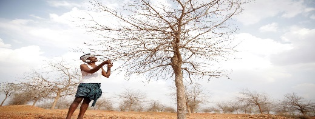
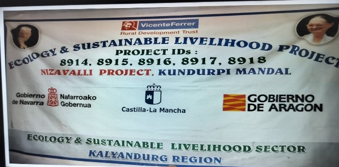

Ecology Project Nijavalli Village


The Rural Development Trust (RDT), in its mission to promote sustainable, long-term development focuses on water harvesting, conservation and management, use of non-conventional energy sources, diversifying livelihood opportunities and activities that suit the land and can mitigate drought through the Ecology and sustainable livelihoods sector. The main focus of this sector is divided in three key areas:
Ecology Development Committee (EDC) :
In a strategic move towards holistic ecological development, the formation of Ecology Development Committees (EDCs) in 2010 marked a pivotal moment in coordinating diverse activities within the Ecology sector across villages. Recognizing the limitations of project-specific committees, EDCs were conceptualized to serve as comprehensive, community-driven entities fostering sustainable environmental practices.
Comprising 6 to 12 members, the EDCs are meticulously structured to accommodate the size of the village, ensuring equal representation of both genders with a keen focus on empowering women. This deliberate inclusion acknowledges the vital role women play in community development and underscores the commitment to gender equity within the committees. The members of EDCs undergo regular training sessions, a cornerstone of their efficacy in steering ecological initiatives within their respective areas. These training modules cover a spectrum of topics, providing committee members with the necessary technical knowledge and skills to navigate the intricacies of environmental stewardship. Subject-matter experts contribute valuable insights, delivering specialized training sessions that elevate the members' understanding and proficiency in addressing ecological challenges